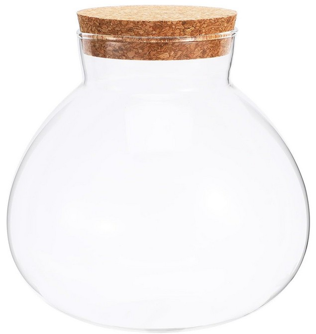
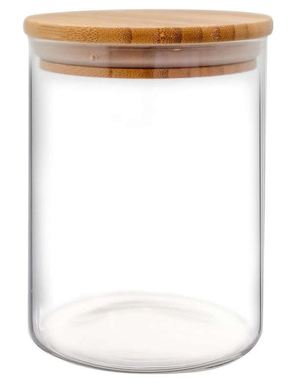
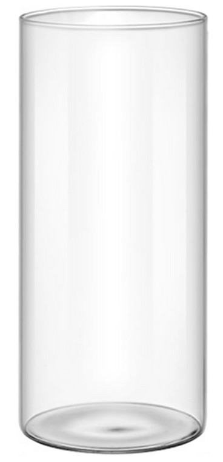

Como bien digo nada más empezar la sección de "Cómo montar tu primer terrario cerrado paso a paso", lo primero que necesitamos, y por ende la base inicial, es ni más ni menos que el terrario como tal. Es decir, el recipiente donde sea que queramos construirlo.
Hay gente que hace terrarios gigantescos que ocupan una habitación entera de una casa, gente que los hace en tarros pequeños como yo, porque los queremos como decoración y también para observación, y luego hay gente que de alguna manera consigue hacer terrarios funcionales en un tubo de ensayo.
1. La regla de oro: la luz y la apertura
A lo que voy es que en cualquier recipiente por el que la luz pueda traspasar se puede hacer un terrario. Desde mi experiencia, lo más fácil y sencillo es hacer terrarios en tarros de cristal que sean de tamaño mediano-grande y que tengan una gran apertura principal. Esto es vital para poder tener más movilidad y que nos sea muchísimo más fácil hacer las cosas en su interior.
2. ¿Cerrado hermético o abierto?
Que tengan tapa o estén sellados herméticamente no es 100% necesario. Puedes hacer un terrario que esté en contacto con el exterior y aún así funcionar. Lo único que debes tener en cuenta es que requerirá más trabajo que uno cerrado, puesto que la evaporación será muy superior y tendrás que regarlo de vez en cuando, perdiendo parte de ese encanto de "ecosistema autosuficiente".
3. Mis recomendaciones personales
Puestos a elegir algún recipiente para empezar con buen pie, estas serían mis recomendaciones principales basándome en lo que yo mismo utilizo:
La opción espaciosa y decorativa: Es un tarro amplio, tiene una apertura grande que te facilita muchísimo el plantado y, visualmente, creo que puede quedar muy bonito en cualquier salón.

Ver este tarro en AmazonMi favorito personal (El que más uso): Este es el recipiente que yo he usado en 2 de los 3 terrarios que tengo. Apenas ocupa espacio y entra perfectamente una planta de Fitonnia bien bonita junto con sus decoraciones, musgo y demás cosas.

Ver este tarro en AmazonPara los amantes de los terrarios abiertos: Si te interesa hacer un terrario abierto (como uno de los míos), en el que la planta pueda salir por arriba y no te importa pulverizar agua más a menudo, te recomiendo un contenedor de este tipo.

Ver contenedor abierto en Amazon4. Lo que no te cuentan: errores típicos al elegir recipiente
El primero que cometí yo, y que veo que comete casi todo el mundo, es elegir un tarro demasiado pequeño. Cuando lo tienes vacío en la mano parece enorme, pero una vez metes 3 cm de grava, 1 cm de malla, 6 cm de tierra y una Fittonia con raíces, te das cuenta de que apenas tienes espacio para meter los dedos y trabajar dentro. Si tienes que elegir entre dos tarros y no sabes cuál, coge siempre el más grande.
El segundo error es obsesionarse con que sea hermético. No hace falta. Yo tengo un terrario abierto que funciona perfectamente desde hace meses. La diferencia real es que uno abierto necesita que le pulverices agua de vez en cuando, porque la humedad se evapora. Si sabes que eres de los que se olvida de esas cosas, entonces sí, busca tapa. Pero si no te importa dedicarle 30 segundos a la semana, un contenedor abierto da más libertad para trabajar en él.
El tercero, y este es el que más duele porque ya has pagado: elegir cristal de color o ahumado porque queda muy bonito en la foto. El problema es que en cuanto lo tienes en casa y intentas ver cómo van las raíces o si hay moho en la grava, no ves absolutamente nada. El cristal transparente sin ningún tipo de tintura es siempre la mejor opción.
5. Preguntas frecuentes
¿Puedo usar un tarro de cocina normal, de los de conservas?
Sí, perfectamente. De hecho, muchos de mis terrarios son exactamente eso. Lo único que tienes que comprobar es que la boca sea lo suficientemente ancha para meter la mano con comodidad. Un tarro de boca estrecha es un suplicio a la hora de plantar.
¿Tiene que tener agujeros en la base para drenar?
No. Los terrarios cerrados no llevan agujeros. El sistema de drenaje se crea dentro: primero la grava en el fondo, luego la malla separadora y encima la tierra. El exceso de agua se queda en la capa de grava y nunca llega a las raíces. Si le haces agujeros a un tarro de cristal, además de complicarte la vida, te arriesgas a que se rompa.
¿Qué tamaño mínimo recomendarías para empezar?
Yo diría que a partir de 3 litros de capacidad ya puedes hacer algo decente. Por debajo de eso es muy difícil de trabajar y el ecosistema es tan pequeño que cualquier error (un exceso de agua, una planta que crece demasiado) lo desestabiliza entero.